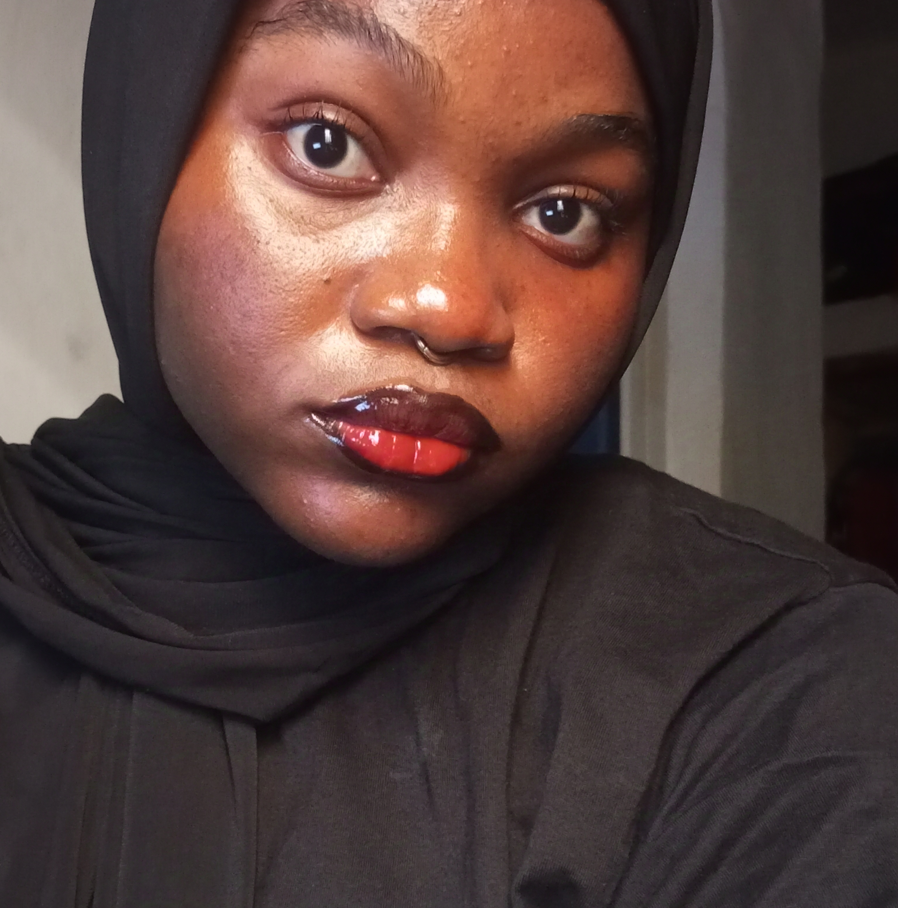

How Artificial Intelligence is Influencing MOF Discovery
An exploration of how machine learning is transforming the way we design MOFs
Read More →
Machine Learning Engineer | NLP Engineer | Polymer informatics | Ethical AI
I’m a machine learning engineer focused on NLP and speech technologies. I've design AI-driven systems that support decision-making and automation across industries.
With a background in chemical engineering, I also explore how machine learning helps understand molecular systems in materials. My research explores this through enzymes and more recently through polymers, where I use ML to study structure–property relationships and material behavior.
Beyond technical work, I'm a very curious person so I enjoy exploring connections between AI, science, and food then I document my thoughts and discoveries on them on Medium.
Investigating electrolyte performance and degradation pathways in lithium-ion batteries to identify factors affecting battery longevity and efficiency.
Paper in preparation
LoResLM@ EACL 2026

An exploration of how machine learning is transforming the way we design MOFs
Read More →Initially designed to help users discover Nigerian recipes based on available ingredients, simplifying meal planning with tailored suggestions. The project has now been extended into a Food Archive for Nigerian meals, serving as a growing collection of recipes and culinary knowledge.
A local tool that helps legal professionals and EB-1A petitioners identify weaknesses in their immigration petition drafts before submission. It simulates a USCIS adjudicator's feedback using LLMs.
Used transformer-based protein models and the TOMER framework to design thermostable variants of Bacillus sp. lipase with predicted optimal activity around 75°C.
An AI-powered app that enables users to log meals, pain levels, symptoms, and medications, creating a personalized health record. Uses data to provide tailored ulcer management insights.
AI-powered healthcare voice assistant app (collaborative project) designed to streamline patient-doctor communication through speech technology.
Built a binary classification model to detect infected vs. uninfected blood smear images, contributing to early malaria diagnosis tools.
Download my resume to learn more about my professional experience and qualifications.